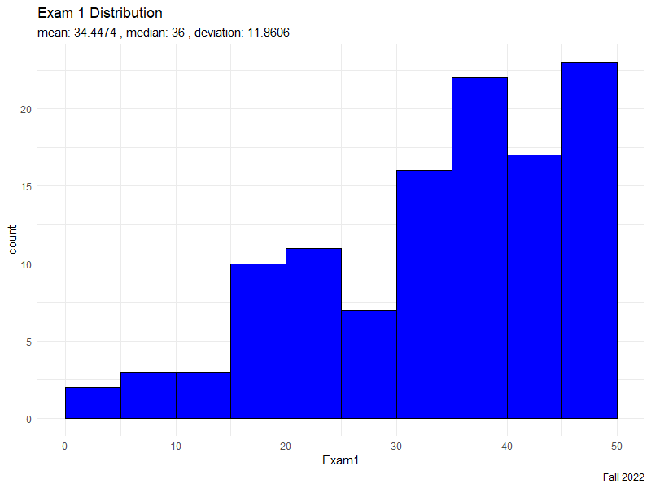
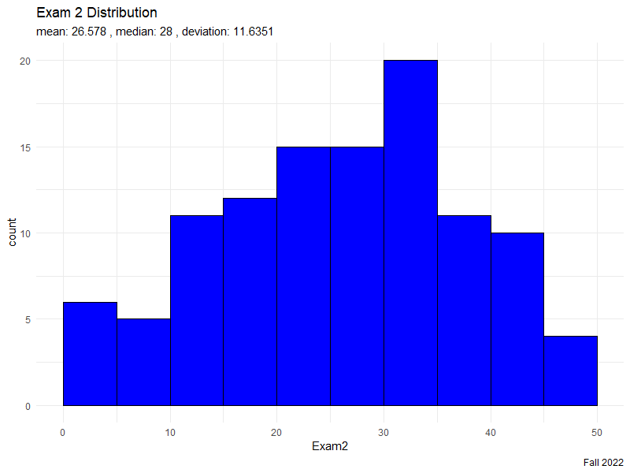

Today: Central Limit Theorem
Goal: Consolidate our understanding of variance
Objectives: Update our understanding of the normal distribution
Bringing it all Together
Recall, from our studies into linear operators,
- \(\text{E}[aX + bY + c] = a\text{E}[X] + b\text{E}[Y] + c\)
- \(\text{Var}[aX + bY + c] = a^{2}\text{Var}[X] + b^{2}\text{Var}[Y] + ab\text{Cov}(X,Y)\)
Let \(X_{i}\) be a set of \(n\) i.i.d. random variables from the same distribution with mean \(\mu\) and variance \(\sigma^{2}\). By induction, we can extrapolate these results for summations:
- \(\text{E}\left[ \displaystyle\sum_{i=1}^{n} X_{i} \right] = \displaystyle\sum_{i=1}^{n}\text{E}\left[ X_{i} \right] = n\mu\)
- \(\text{Var}\left[ \displaystyle\sum_{i=1}^{n} X_{i} \right] = \displaystyle\sum_{i=1}^{n}\text{Var}\left[ X_{i} \right] = n\sigma^{2}\)
Recall, independence implies zero covariance.
Recall, from our look at the Law of Large Numbers, for the sample mean of random variables \(\bar{X}_{n}\),
- \(\text{E}[\bar{X}_{n}] = \mu\)
- \(\text{Var}(\bar{X}_{n}) = \displaystyle\frac{\sigma^{2}}{n}\)
Finally,
- sample mean \(\bar{X}_{n}\) is an unbiased estimator of population mean \(\mu\)
- sample variance \(S_{n}^{2}\) is an unbiased estimator of population variance \(\sigma^{2}\)
and the sample standard deviation \(s\) is almost an unbiased estimator of the population standard deviation \(\sigma\)
Summation
Following from how \(\text{Var}\left[ \displaystyle\sum_{i=1}^{n} X_{i} \right] = n\sigma^{2}\), it follows that the standard deviation for a summation is
\[\sigma_{n} = \sigma\sqrt{n}\]
Think: as sample size \(n\) increases, does \(\sigma_{n}\) increase or decrease?
\[z\text{-score:} \quad z = \displaystyle\frac{x - \mu}{\sigma} \quad\rightarrow\quad Z_{n} = \displaystyle\frac{\sum X_{i} - n\mu}{\sigma_{n}} = \displaystyle\frac{\sum X_{i} - n\mu}{\sigma\sqrt{n}}\]
For Covid-19, the population statistics for sick patients are a mean of \(\mu = 4\) days and standard deviation \(\sigma = 2\) days (assuming a normal distribution since the number of confirmed cases is numerous). For an incoming case load of 9 sick patients, what is the probability that they need at least 32 days combined in the hospital?
Central Limit Theorem
Following from how \(\text{Var}\left[ \bar{X}_{n} \right] = \displaystyle\frac{\sigma^{2}}{n}\), it follows that the standard deviation for an average is
\[\sigma_{n} = \displaystyle\frac{\sigma}{\sqrt{n}}\]
- This \(\displaystyle\frac{\sigma}{\sqrt{n}}\) is also called the standard error.
Think: as sample size \(n\) increases, does \(\sigma_{n}\) increase or decrease?
\[z\text{-score:} \quad z = \displaystyle\frac{x - \mu}{\sigma} \quad\rightarrow\quad Z_{n} = \displaystyle\frac{\bar{X}_{n} - \mu}{\sigma_{n}} = \displaystyle\frac{\bar{X}_{n} - \mu}{\frac{\sigma}{\sqrt{n}}}\]
For Covid-19, the population statistics for the incubation period are a mean of \(\mu = 8\) days and standard deviation \(\sigma = 3\) days (assuming a normal distribution since the number of confirmed cases is numerous). For a sample of 25 infected people, what is the probability that their average incubation period is fewer than 7 days?
Looking Ahead
- WHW9
- WHW10
- (next LHW assignments will be given after Thanksgiving)
Final Exam will be on Dec. 8

